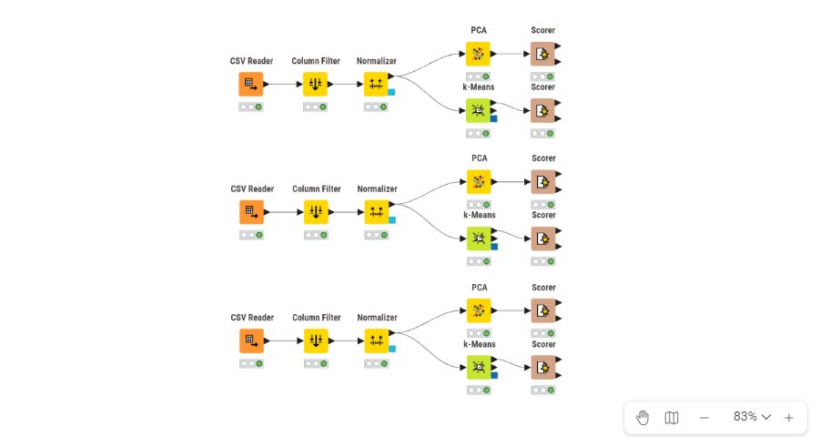
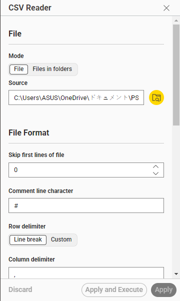
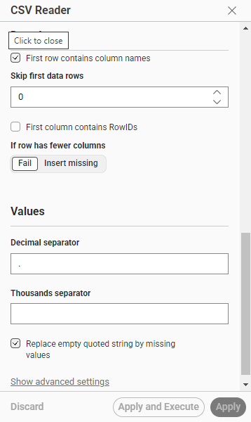
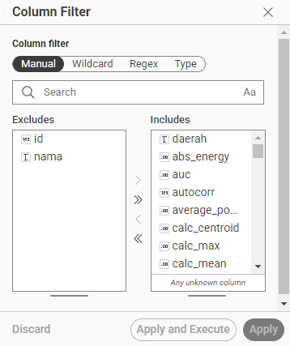
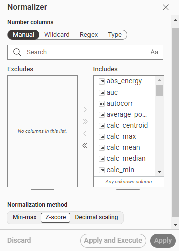
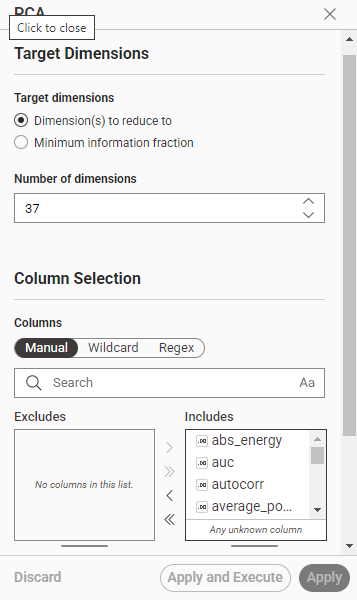
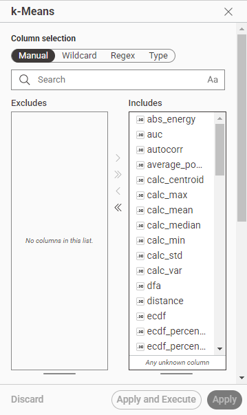
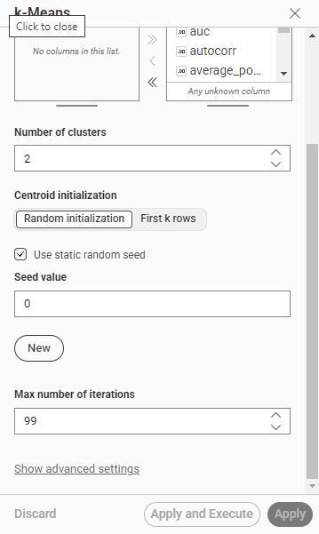
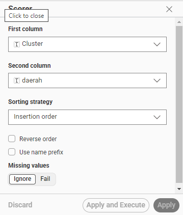

5.4 Dokumentasi KNIME Workflow — Clustering Polutan#
Dokumentasi ini menjelaskan alur kerja (workflow) implementasi analisis clustering menggunakan KNIME Analytics Platform untuk masing-masing polutan (CO, NO₂, SO₂).
5.4.1 Overview Workflow#


Fig. 1 Overview Workflow KNIME#
Deskripsi Umum: Workflow KNIME melakukan analisis clustering pada dataset gabungan kelas (file CSV fitur hasil ekstraksi TSFEL) untuk setiap polutan secara terpisah. Alur kerja mencakup tahap:
Setup / Data Ingestion — Load data dari file CSV gabungan polutan (CO, NO₂, atau SO₂)
Preprocessing — Kolom filtering dan normalisasi fitur (Z-Score)
Dimensionality Reduction — PCA (opsional, untuk Skenario 2 menyusutkan 68 fitur menjadi 37 fitur)
Clustering — K-Means dengan berbagai variasi nilai K
Evaluasi — Silhouette Coefficient & Scoring
5.4.2 Rincian Per Node#
Node 1: CSV Reader#
Fungsi: Membaca file CSV gabungan fitur ekstraksi TSFEL untuk polutan tertentu (co.csv, no2.csv, atau so2.csv).


Fig. 2 CSV Reader — konfigurasi 1#

Fig. 3 CSV Reader — konfigurasi 2#


Fig. 4 CSV Reader — konfigurasi 3#
Konfigurasi:
Mode: File
Source: Direktori penyimpanan file CSV gabungan kelas (
.csv)Row delimiter: Line break
Column delimiter: Comma (
,)First row contains column names: Checked (Dicentang)
Decimal separator: Titik (
.)Replace empty quoted string by missing values: Checked (Dicentang)
Output: Tabel dataset yang berisi baris data mahasiswa dan kolom fitur numerik beserta metadata.
Penjelasan: Node ini berfungsi sebagai gerbang masuk data utama dalam alur kerja KNIME. Data yang dibaca merupakan hasil kompilasi (merge) dari seluruh file ekstraksi fitur milik anggota kelas untuk polutan yang sedang dianalisis. Pengaturan Decimal separator menggunakan titik dan penanganan missing value diaktifkan agar format data numerik terbaca dengan sempurna oleh node berikutnya.
Node 2: Column Filter#
Fungsi: Memfilter kolom — memisahkan kolom metadata (seperti nama, id, atau daerah) dari kolom fitur numerik hasil ekstraksi.


Fig. 5 Column Filter — konfigurasi#
Konfigurasi:
Include: 68 kolom fitur numerik TSFEL (contoh:
abs_energy,auc,autocorr, …,zero_cross)Exclude: Kolom identitas non-numerik (id, nama, daerah)
Penjelasan: Hanya kolom fitur numerik yang akan dilibatkan ke dalam perhitungan matematis klastering dan PCA. Kolom metadata dikecualikan agar tidak mendistorsi jarak Euclidean, namun disimpan secara terpisah untuk keperluan analisis spasial/karakteristik di akhir.
Node 3: Normalizer (Z-Score)#
Fungsi: Standarisasi fitur menggunakan metode Z-Score agar setiap fitur memiliki rata-rata (\(\mu = 0\)) dan deviasi standar (\(\sigma = 1\)).


Fig. 6 Normalizer (Z-Score) — konfigurasi#
Konfigurasi:
Method: Z-Score (Standardization)
Apply to: Semua kolom fitur numerik terpilih
Penjelasan Matematis:
Z-Score transformasi dilakukan dengan rumus:
dimana:
\(x\) = nilai fitur asli
\(\mu\) = mean dari fitur
\(\sigma\) = standard deviation dari fitur
Mengapa Normalisasi Diperlukan?
K-Means menggunakan perhitungan jarak Euclidean, sehingga sangat sensitif terhadap perbedaan skala antar fitur.
PCA membutuhkan data yang sudah distandarisasi agar komponen utamanya tidak bias terhadap fitur dengan rentang nilai yang sangat besar.
Node 4: PCA (Principal Component Analysis) — Skenario 2#
Fungsi: Reduksi dimensi dari 68 fitur menjadi 37 komponen utama esensial untuk Skenario 2.


Fig. 7 PCA — konfigurasi#
Konfigurasi:
Number of components: 37
Method: SVD (Singular Value Decomposition)
Scaling: Tidak dicentang ulang (karena data sudah dinormalisasi pada node sebelumnya).
Penjelasan Matematis:
PCA bekerja melalui tahapan berikut:
Matriks Covariance: \(C = \frac{1}{n-1} X^T X\)
Eigenvalue Decomposition: \(C v = \lambda v\) (mencari eigenvector \(v\) dan eigenvalue \(\lambda\)).
Proyeksi: Mereduksi dimensi dengan mengambil 37 komponen utama ber-eigenvalue terbesar (\(X_{PCA} = X \cdot V_k\)).
Output: Tabel baru dengan dimensi tereduksi menjadi 37 kolom komponen utama.
Node 5: K-Means Clustering#
Fungsi: Mengelompokkan data ke dalam \(K\) klaster menggunakan algoritma K-Means.


Fig. 8 K-Means — konfigurasi 1#


Fig. 9 K-Means — konfigurasi 2#
Konfigurasi:
Number of clusters (K): Dijalankan secara iteratif (misal: \(K = 2\) sampai \(10\)) untuk mencari titik optimal.
Max iterations: 300
Number of runs: 10
Random seed: 42 (untuk memastikan hasil dapat direproduksi / reproducibility)
Distance measure: Euclidean Distance
Penjelasan Matematis: Algoritma meminimalkan Objective Function (Inertia / Within-Cluster Sum of Squares): $\(J = \sum_{j=1}^{K} \sum_{x_i \in S_j} \Vert{}x_i - c_j\Vert{}^2\)\( dimana \)c_j\( adalah titik pusat (*centroid*) dari klaster \)S_j$.
Node 6: Scorer (Silhouette Coefficient)#
Fungsi: Mengevaluasi seberapa baik pemisahan antar klaster terbentuk menggunakan Silhouette Coefficient.


Fig. 10 Scorer (Silhouette Coefficient) — konfigurasi#
Konfigurasi:
Category column: Label klaster hasil output K-Means
Measure: Euclidean
Penjelasan Matematis: Silhouette Score untuk setiap titik \(i\) dihitung berdasarkan perbandingan jarak intra-klaster \(a(i)\) dan jarak inter-klaster terdekat \(b(i)\): $\(s(i) = \frac{b(i) - a(i)}{\max\{a(i), b(i)\}}\)\( Nilai rata-rata \)\bar{s}$ mendekati 1 mengindikasikan struktur klaster yang sangat baik dan terdefinisi dengan jelas.
5.4.3 Alur Kerja Lengkap (Flow)#
CSV Reader (Data Gabungan Polutan)
│
▼
Column Filter (Drop Metadata)
│
▼
Normalizer (Z-Score)
│
├──────────────────────────────┐
▼ (Skenario 1: Full Features) ▼ (Skenario 2: Reduksi Dimensi)
K-Means (K=2..10) PCA (68 → 37 Fitur)
│ │
▼ ▼
Silhouette Evaluation K-Means (K=2..10)
│ │
└──────────────┬───────────────┘
▼
Evaluasi & Komparasi Model
5.4.4 Konfigurasi Parameter Penting#
Parameter |
Nilai |
Keterangan |
|---|---|---|
Sumber Data |
File CSV ( |
Data gabungan kelas per polutan |
K (jumlah cluster) |
2 - 10 |
Variasi pengujian mencari K terbaik |
Max iterations |
300 |
Batas iterasi maksimum algoritma K-Means |
Random seed |
42 |
Menjaga konsistensi hasil acak |
PCA components |
37 |
Target reduksi dimensi (Skenario 2) |
Normalisasi |
Z-Score |
Menyamakan skala varians fitur |